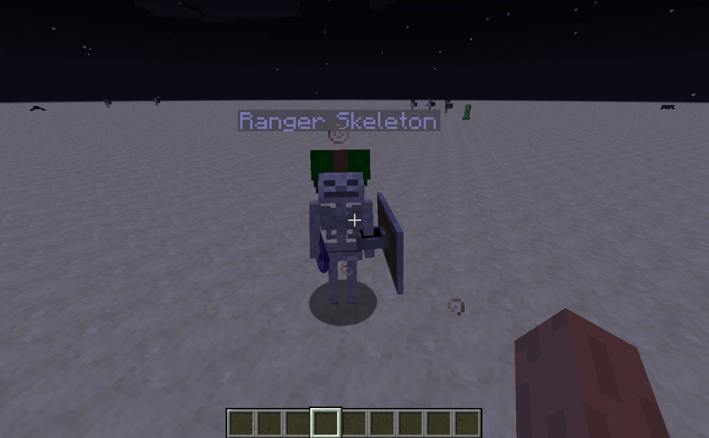
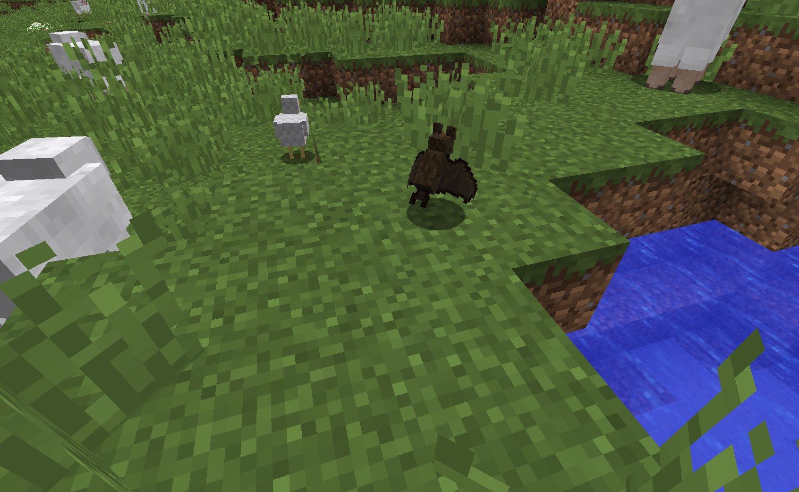
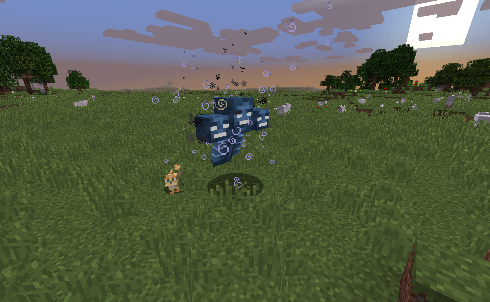
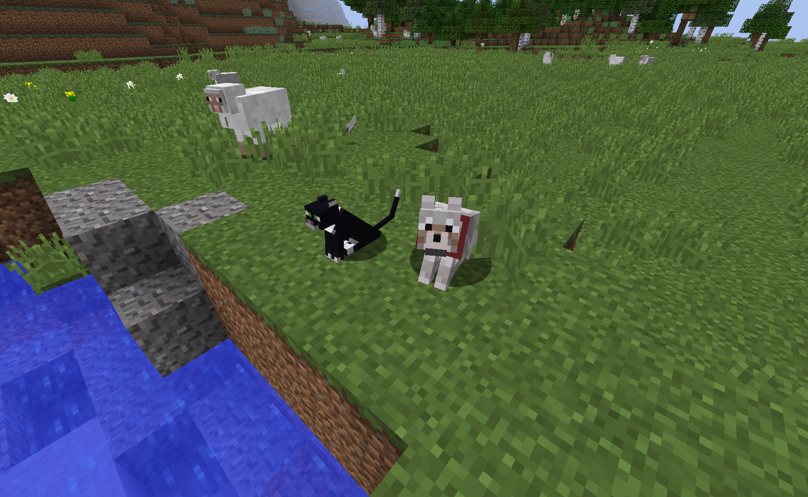

Challenger Mobs
Mob Tweaks


Mob Drop Buffs

Feather Plucking

Pesky Mob Purger

Wither Restriction

Pet Armory
Challenger Mobs
Any hostile mob (from any mod) can spawn as a Challenger Mob
Challenger Mobs have various classes, configurable loot tables, names, and rarity. They are lots harder than your average mob. All challenger mobs spawn with near-infinite Fire Resistance. Be careful finding these guys!
Challenger Mobs have various classes, configurable loot tables, names, and rarity. They are lots harder than your average mob. All challenger mobs spawn with near-infinite Fire Resistance. Be careful finding these guys!
Mob Drop Buffs
Chickens, Cows, Skeletons, Squids and Endermen have individually configurable increases in their resourceful drops.
The buffs aren't crazy, but they're for resources that make sense to be buffed, like Ender Pearls, Bones, Feathers, Leather and Ink Sacs
The buffs aren't crazy, but they're for resources that make sense to be buffed, like Ender Pearls, Bones, Feathers, Leather and Ink Sacs
Feather Plucking
Pluck feathers off of chickens with shears!
There is a cool-down of approximately 5 minutes, but it doesn't hurt the chicken even though it looks like it does!
There is a cool-down of approximately 5 minutes, but it doesn't hurt the chicken even though it looks like it does!
Mob Disabler
Tired of Bats and / or Pig Zombies???
V-Tweaks offers an option to prevent either (or both) from spawning. Disabling Pig-Zombies will also reduce Ghast Spawns (because otherwise your Nether would flood with them).
V-Tweaks offers an option to prevent either (or both) from spawning. Disabling Pig-Zombies will also reduce Ghast Spawns (because otherwise your Nether would flood with them).
Wither Spawn Restrictions
Looking to force a challenge or prevent widespread overworld griefing?
You can use V-Tweaks to prevent the Wither from being summoned in the Overworld with one simple config option (defaulted to false).
You can use V-Tweaks to prevent the Wither from being summoned in the Overworld with one simple config option (defaulted to false).
Pet Armory
You can now equip any Tameable entity (from other mods or minecraft) with armor! Right click on them with any variety of Horse Armor and they'll get geared up with armor levels of that type (Iron, Gold or Diamond).
Note: This will not render the armor.
Note: This will not render the armor.